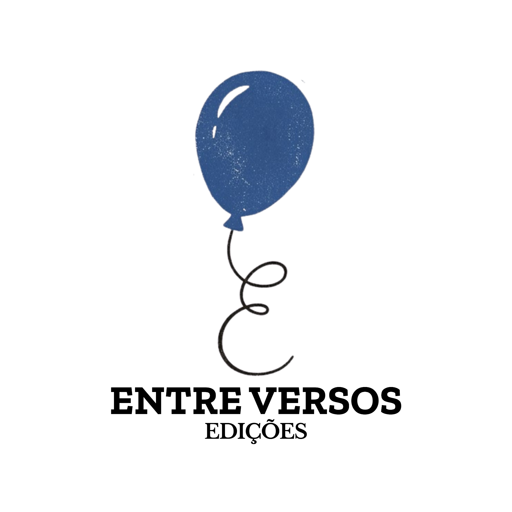

Há novas histórias sendo preparadas.
Em breve, este será o espaço da Entre Versos Edições: literatura, poesia, cordel e projetos que aproximam pessoas por meio das palavras.
Site em construção

Em breve, este será o espaço da Entre Versos Edições: literatura, poesia, cordel e projetos que aproximam pessoas por meio das palavras.